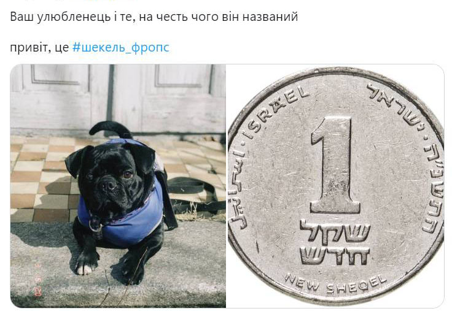

Хто такий Шекель
Фропс* Шекель - наш домашній улюбленець. У нього було важке життя, починаючи з появи: Шекель — результат дослідів невідомої шаленої науковиці, яка схрещує різні породи собак-брахіцефалів. Півроку жив у пари молодих хлопців, які швидко награлися та віддали тварину до приватного будинку жити у будці на вулиці. Там собака отримав травму ока, яку ніхто не лікував. Тому Шекель на одне око сліпий. Але це не впливає ні на бадьорість собачого духу, ні на нашу любов.
Шекель - і пес, і валюта
Шекель – таке ім’я пес отримав на честь ізраїльської валюти.
Тільки з притулку
Донька все життя мріяла про собаку і, коли стала дорослою, взяла пса з притулку.
Це було питання принципу: не купувати, а взяти залишену собаку. І жодного разу не пожалкувала.
_______________________________
*Фропс - помісь французького бульдога і мопса.